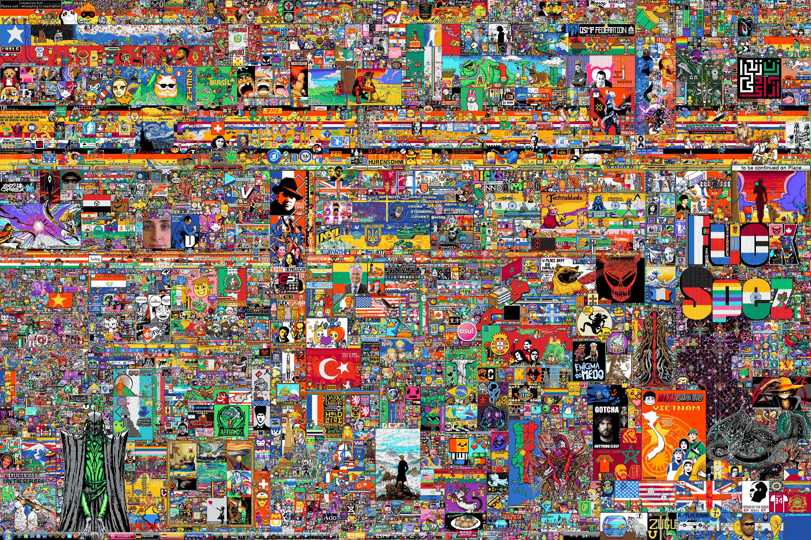
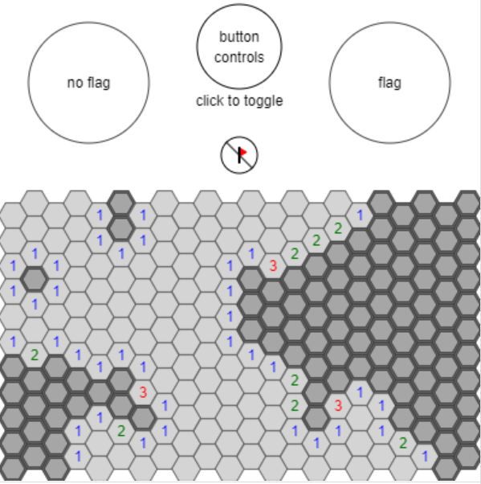

Experiment 7: Data Visualization & Networks
Imitate
For Imitate, I decided to build off of r/place:
https://www.reddit.com/r/place/
r/place was really interesting to me because even though so many people were working together to make it, the final image had a lot of order. Here is my version:
https://editor.p5js.org/coco558/full/_sNk_Zg2f
I am using FireBase for a server. Each time you click, it updates a JSON on FireBase. The JSON uses string versions of the coordinates to keep track of which squares are which colors.
Integrate
I decided to integrate with a program I made a while ago. It's a hex version of Minesweeper:
https://www.khanacademy.org/computer-programming/hex-minesweeper/5684705568505856
Here is the hex integration with r/place I made:
https://editor.p5js.org/coco558/full/FrHqgSd7R
I redesigned the hex shapes to make the code cleaner. This version uses the same storage system as the previous one. Every other layer is shifted over so that the Hexagons interlock.
Innovate
For my Innovation, I decided to split the hexagons into equilateral triangles and allow people to edit those. I let you dray with hexagons, trapezoids, rhombuses, and triangles:
https://editor.p5js.org/coco558/sketches/wM3ZkohmF
The triangles are still stored in a grid. I make horizontal rows by flipping every other triangle, and then I shift rows horizontally to line them up. I hardcoded in all the shapes and their rotations. I made each one of these versions have a separate part of the server so all can work at the same time.
Reflection
I really liked this project. I thought that r/place was really cool and I always wanted to do something similar. I'm interested to see how many people in the class will interact with it and what they will create. This also opened up a bunch of other possibilities because I learned how to use FireBase.